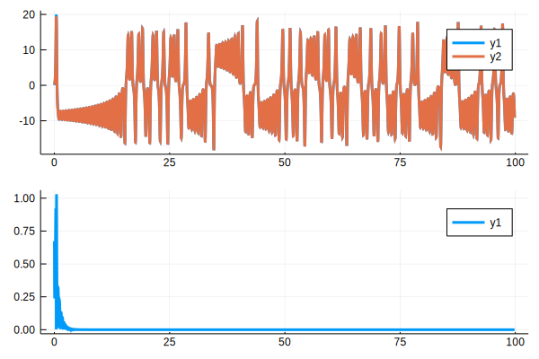

Construction and Simulation of Networks
In this tutorial, we will simulate a network. A network is actually a subsystem. That is, a network consists of components that are connected to each other. See Network and Subsystem for more information networks and subsystem.
Construction of Networks
In this example, we will simulate a small network consisting of rwo dynamical systems. The network in this example consists of identical dynamical systems whose dynamics is given by
where $N$ is the number of node, $f$ is the vector function corresponding to the individual node dynamics, $\epsilon_{ij}$ is the coupling strength between the nodes $i$ and $j$. The diagonal matrix $P$ determines the way the nodes are connected to each other. In this simulation, we construct a network consisting of two nodes with Lorenz dynamics. The matrix $E = [\epsilon_{ij}]$ determines the coupling strength and topology of the network: $\epsilon_{ij} = 0$ if there is no connection between nodes $i$ and $j$, otherwise $\epsilon_{ij} = 0$.
using Jusdl # hide
numnodes = 2
nodes = [LorenzSystem(Bus(3), Bus(3)) for i = 1 : numnodes]
conmat = [-1 1; 1 -1] * 10
cplmat = [1 0 0; 0 0 0; 0 0 0]
net = Network(nodes, conmat, cplmat, inputnodeidx=[], outputnodeidx=1:numnodes)Network{Nothing,Bus{Link{Float64}},Link{Float64},Link{Bool},Array{AbstractSystem,1},Array{Int64,2},Array{Int64,2}}(nothing, Bus(nlinks:6, eltype:Link{Float64}, isreadable:false, iswritable:false), Link(state:open, eltype:Float64, hasmaster:false, numslaves:0, isreadable:false, iswritable:false), Link(state:open, eltype:Bool, hasmaster:false, numslaves:0, isreadable:false, iswritable:false), Callback[], UUID("5b4ac5dd-9ba0-49e8-8166-876ecb9e832c"), AbstractSystem[LorenzSystem(sigma:10.0, beta:2.6666666666666665, rho:28.0, gamma:1.0, state:[0.07447929810661713, 0.3171065951989447, 0.4981002551774796], t:0.0, input:Bus(nlinks:3, eltype:Link{Float64}, isreadable:false, iswritable:false), output:Bus(nlinks:3, eltype:Link{Float64}, isreadable:false, iswritable:false)), LorenzSystem(sigma:10.0, beta:2.6666666666666665, rho:28.0, gamma:1.0, state:[0.7479647558329519, 0.4307042696943002, 0.4033980734200635], t:0.0, input:Bus(nlinks:3, eltype:Link{Float64}, isreadable:false, iswritable:false), output:Bus(nlinks:3, eltype:Link{Float64}, isreadable:false, iswritable:false)), Coupler(conmat:[-10 10; 10 -10], cplmat:[1 0 0; 0 0 0; 0 0 0]), Memory(ndelay:3, input:Bus(nlinks:3, eltype:Link{Float64}, isreadable:false, iswritable:false), output:Bus(nlinks:3, eltype:Link{Float64}, isreadable:false, iswritable:false)), Memory(ndelay:3, input:Bus(nlinks:3, eltype:Link{Float64}, isreadable:false, iswritable:false), output:Bus(nlinks:3, eltype:Link{Float64}, isreadable:false, iswritable:false))], [-10 10; 10 -10], [1 0 0; 0 0 0; 0 0 0], UnitRange{Int64}[1:2])Note that the states of all the nodes are taken as output nodes. To save the output values of the nodes, we construct a writer.
writer = Writer(Bus(length(net.output)))Writer(path:/tmp/3033372c-5628-40f3-9abc-171a48927691.jld2, nin:6)We connect the network to the writer and construct the model
connect(net.output, writer.input)
model = Model(net, writer)Model(blocks:AbstractComponent[Network{Nothing,Bus{Link{Float64}},Link{Float64},Link{Bool},Array{AbstractSystem,1},Array{Int64,2},Array{Int64,2}}(nothing, Bus(nlinks:6, eltype:Link{Float64}, isreadable:false, iswritable:false), Link(state:open, eltype:Float64, hasmaster:false, numslaves:0, isreadable:false, iswritable:false), Link(state:open, eltype:Bool, hasmaster:false, numslaves:0, isreadable:false, iswritable:false), Callback[], UUID("5b4ac5dd-9ba0-49e8-8166-876ecb9e832c"), AbstractSystem[LorenzSystem(sigma:10.0, beta:2.6666666666666665, rho:28.0, gamma:1.0, state:[0.07447929810661713, 0.3171065951989447, 0.4981002551774796], t:0.0, input:Bus(nlinks:3, eltype:Link{Float64}, isreadable:false, iswritable:false), output:Bus(nlinks:3, eltype:Link{Float64}, isreadable:false, iswritable:false)), LorenzSystem(sigma:10.0, beta:2.6666666666666665, rho:28.0, gamma:1.0, state:[0.7479647558329519, 0.4307042696943002, 0.4033980734200635], t:0.0, input:Bus(nlinks:3, eltype:Link{Float64}, isreadable:false, iswritable:false), output:Bus(nlinks:3, eltype:Link{Float64}, isreadable:false, iswritable:false)), Coupler(conmat:[-10 10; 10 -10], cplmat:[1 0 0; 0 0 0; 0 0 0]), Memory(ndelay:3, input:Bus(nlinks:3, eltype:Link{Float64}, isreadable:false, iswritable:false), output:Bus(nlinks:3, eltype:Link{Float64}, isreadable:false, iswritable:false)), Memory(ndelay:3, input:Bus(nlinks:3, eltype:Link{Float64}, isreadable:false, iswritable:false), output:Bus(nlinks:3, eltype:Link{Float64}, isreadable:false, iswritable:false))], [-10 10; 10 -10], [1 0 0; 0 0 0; 0 0 0], UnitRange{Int64}[1:2]), Writer(path:/tmp/3033372c-5628-40f3-9abc-171a48927691.jld2, nin:6)])At this point, we are ready to simulate the system.
t0 = 0
dt = 0.01
tf = 100.
sim = simulate(model, t0, dt, tf)Simulation(state:done, retcode:success, path:/tmp/Simulation-a033c9ec-96e6-4a86-90cf-c7f725c475d4)Then, we read the data from the writers and plot the data.
using Plots
t, x = read(writer, flatten=true)
p1 = plot(t, x[:, 1])
plot!(t, x[:, 4])
p2 = plot(t, abs.(x[:, 1] - x[:, 4]))
p3 = plot(p1, p2, layout=(2,1))qt5ct: using qt5ct plugin
Note the systems are synchronized, i.e., the error between the outputs of the nodes goes to zero as time goes to zero. This synchronization phenomenon depends on the coupling strength between the nodes. The synchronization is not achieved when he coupling strength between the nodes are is large enough.